下载链接：
https://codeload.github.com/raspberrypi/linux/zip/rpi-4.1.y_rebase
下载4.1.18-v7内核版本，得到linux-rpi-4.1.y_rebase.zip。
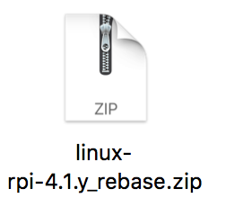
解压时为防止源码文件名因大小写被合并的问题，解压时加上-C选项：
unzip -C linux-rpi-4.1.y_rebase.zip得到了linux-rpi-4.1.y_rebase文件夹，也就是源码的根目录。
本实验在ubuntu-16.04环境下用交叉编译工具arm-linux-gnueabihf-gcc完成。
首先在源码中添加系统调用，我们选择223号系统调用进行修改。先cd进入源码根目录linux-rpi-4.1.y_rebase。
进入arch/arm/kernel目录下，添加自己的mysyscall.c文件
cd arch/arm/kernel
vi mysyscall.c加入自己的系统调用mysuperstar：
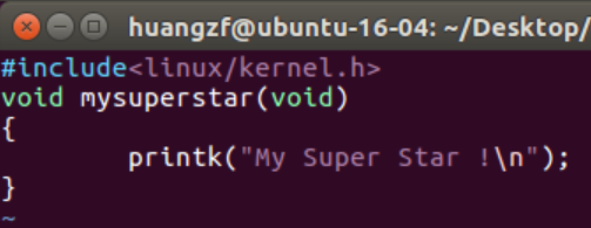
增加系统调用，将内核不使用的 223 号系统调用替换为新的系统调用:
vi call.S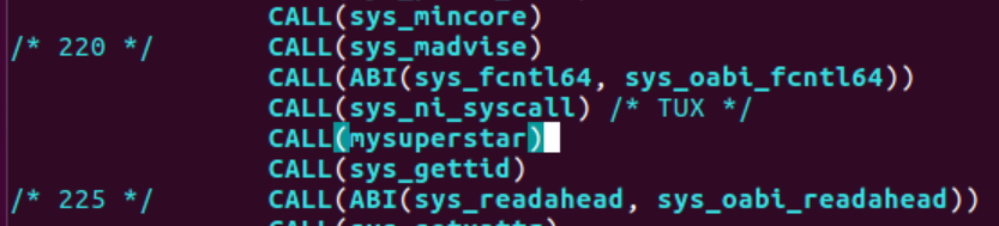
修改 Makefile 文件,增加编译 mysyscall.o:
vi Makefile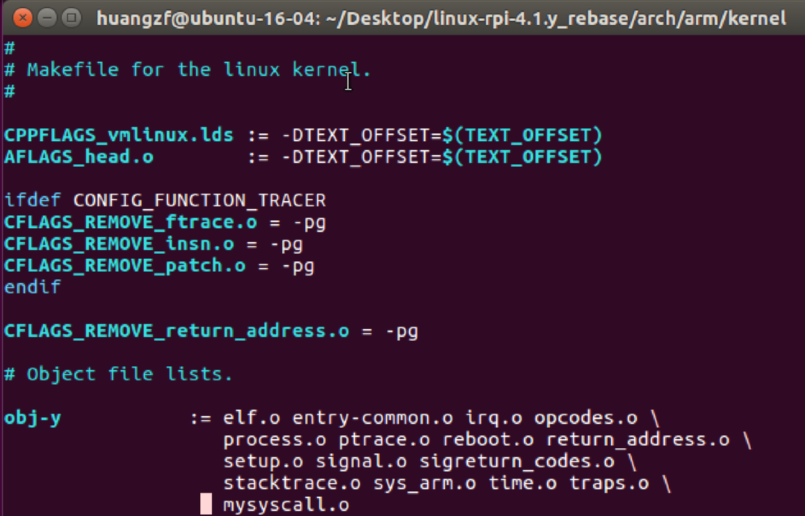
回到内核源码目录下，配置生成.config。首先把Makefile的编译器改成自己的版本。修改ARCH和CROSS_COMPILE的值。
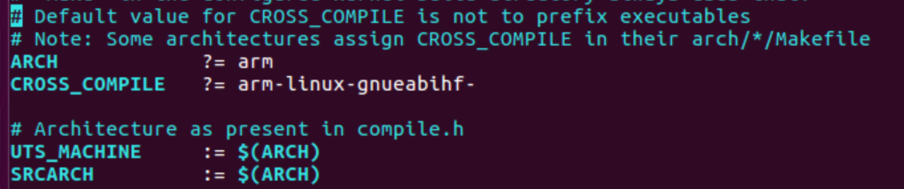
如果ubuntu上apt get获取的是arm-linux-gnueabihf-gcc-4.9，还要修改下面CC那一行的值为gcc-4.9。
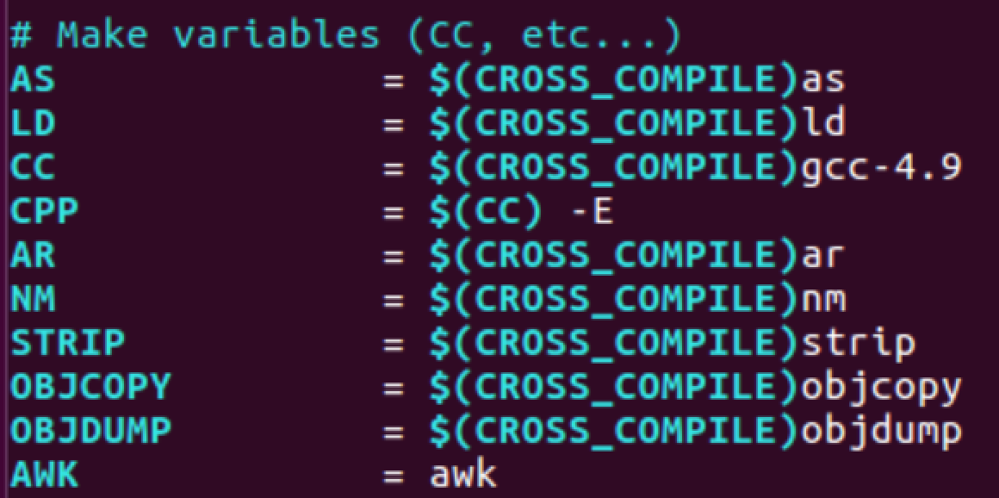
加载arch/arm/configs/bcm2709_defconfig生成.config文件:
make bcm2709_defconfig然后执行make编译：
make -j4 zImage modules dtbs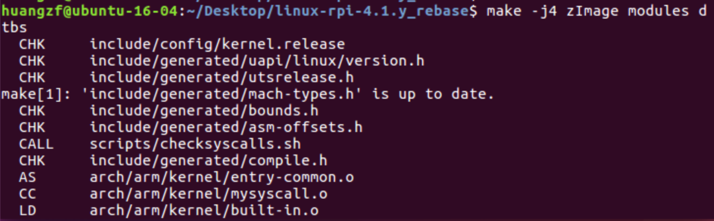
编译完成后结果如下：
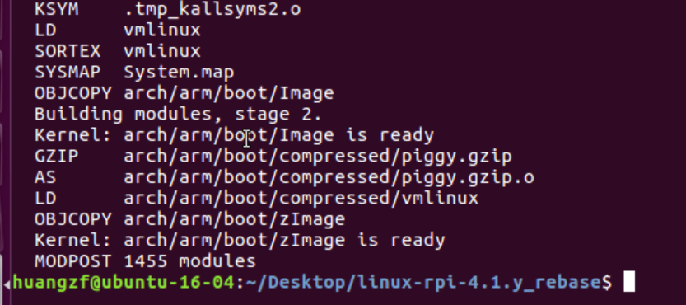
下一步是将内核装载到树莓派的SD卡上，首先用读卡器将SD卡接到PC上，通过ubuntu访问SD卡。我的SD卡接入后自动挂载到/media/huangzf/，其中fat32格式的boot分区挂载在/media/huangzf/boot，ext4格式的其余目录挂载在/media/huangzf/443559ba-b80f-4fb6-99d9-ddbcd6138fbd下。
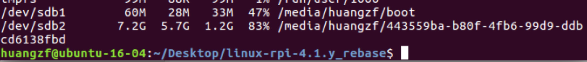
然后将内核模块装载到SD卡的ext4分区下：
sudo make INSTALL_MOD_PATH=/media/huangzf/443559ba-b80f-4fb6-99d9-ddbcd6138fbd modules_install将生成的zImage文件转化为树莓派启动用的.img文件，添加到树莓派/boot下：
sudo scripts/mkknlimg arch/arm/boot/zImage /media/huangzf/boot/kernel_new.img复制必要的文件到SD卡/boot目录下：
sudo cp arch/arm/boot/dts/*.dtb /media/huangzf/boot
sudo cp arch/arm/boot/dts/overlays/*.dtb* /media/huangzf/boot/overlays/进SD卡的/boot目录，修改config.txt文件，在最后添加一行：
kernel=kernel_new.img使树莓派在开机时找kernel_new.img。然后拔出SD卡，插到树莓派上启动即可。
启动树莓派，ssh连接到树莓派上。编写main.c文件，调用223号系统调用：
#include<stdio.h>
#include<sys/syscall.h>
int main()
{
syscall(223);
return 0;
}编译运行后，查看log输出:
dmesg | tail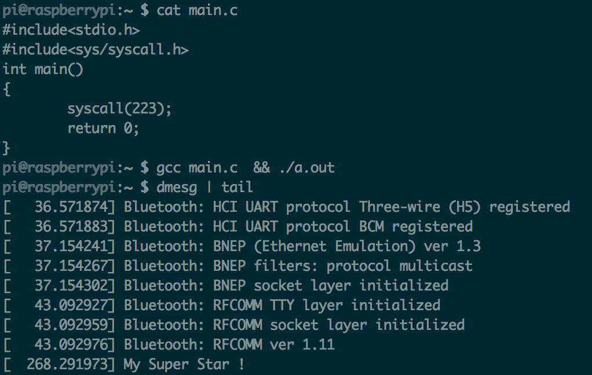
输出了前面内核源码中mysyscall.c中的My Super Star信息，内核装载和系统调用测试都成功。
代码如下：
#include <stdio.h>
#include <sys/syscall.h>
void main()
{
__asm(
"stmfd sp!, {fp, lr}\n\t"
"add fp, sp, #4\n\t"
"mov r0, #223\n\t"
"bl syscall\n\t"
"ldmfd sp!, {fp, pc}\n\t"
);
}将常数223传给r0，然后用bl指令调用syscall函数。编译程序后运行，查看log记录，可以发现已经输出了My Super Star，说明223号系统调用成功执行。
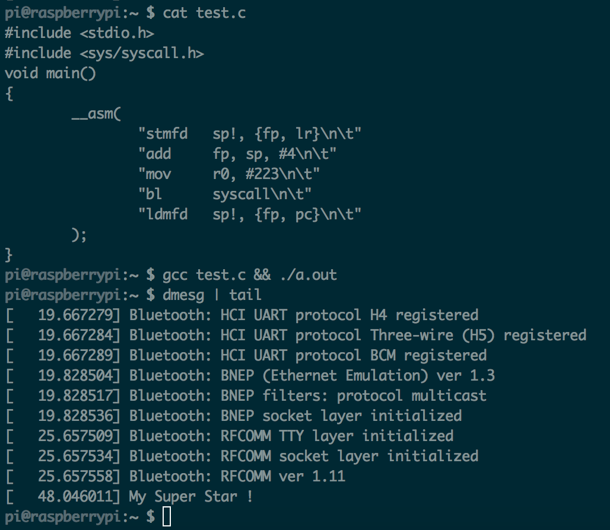
用syscall()函数。
C语言执行系统调用跟前面一样：
#include<stdio.h>
#include<sys/syscall.h>
int main()
{
syscall(223);
return 0;
}编译运行后，查看log，第二句My Super Star就是C语言调用syscall输出来的内容。
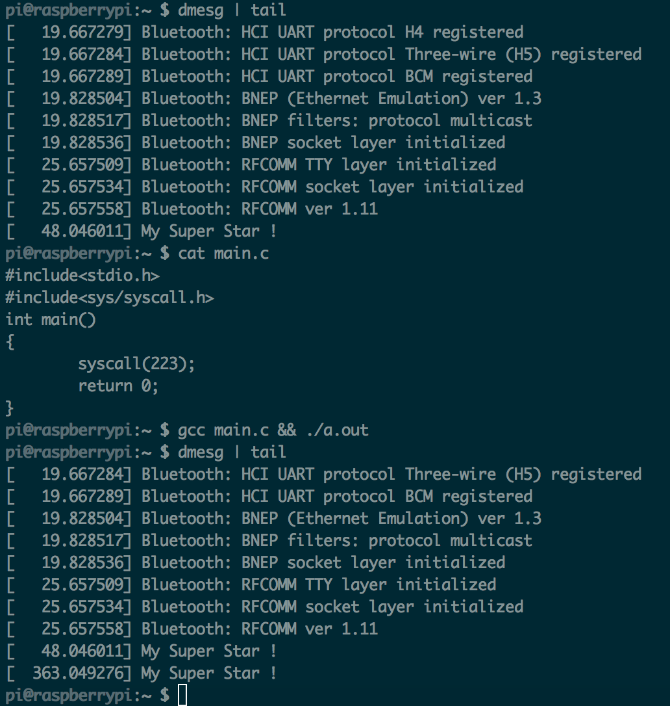
两种方法做系统调用都得以实现。
这里使用操作系统实验中使用的遍历进程内核模块，采用结构体task_struct类型的指针变量task，对task指针用init_task变量赋初值，用list_for_each函数以及list_entry函数遍历进程，获取每一个进程的task_struct结构体指针。该结构体具有成员state，表示进程状态。还有real_parent，表示指向父进程的指针。分别对进程的十种可能的状态进行switch-case判断，可以统计出各种进程的数目。
文件print_id.c:
#include <linux/kernel.h>
#include <linux/module.h>
#include <linux/init.h>
#include <linux/sched.h>
#include <linux/list.h>
static __init int print_pid(void)
{
struct task_struct *task, *p;
struct list_head *pos;
int count = 0;
int cnt[10] = {0};
printk("$begin$\n");
task=&init_task;
list_for_each(pos, &task->tasks)
{
p = list_entry(pos, struct task_struct, tasks);
printk("$$ %s %d ", p->comm, p->pid);
switch(p->state) {
case TASK_RUNNING:
cnt[0]++;
printk("TASK_RUNNING");
break;
case TASK_INTERRUPTIBLE:
cnt[1]++;
printk("TASK_INTERRUPTIBLE");
break;
case TASK_UNINTERRUPTIBLE:
cnt[2]++;
printk("TASK_UNINTERRUPTIBLE");
break;
case EXIT_ZOMBIE:
cnt[3]++;
printk("TASK_ZOMBIE");
break;
case __TASK_STOPPED:
cnt[4]++;
break;
case __TASK_TRACED:
cnt[5]++;
break;
case EXIT_DEAD:
cnt[6]++;
break;
case TASK_DEAD:
cnt[7]++;
break;
case TASK_WAKEKILL:
cnt[8]++;
break;
case TASK_WAKING:
cnt[9]++;
break;
}
count++;
printk(" %s $$\n", p->real_parent->comm);
}
printk("$$ Num Of TASK_RUNNING: %d $$\n", cnt[0]);
printk("$$ Num Of TASK_INTERRUPTIBLE: %d $$\n", cnt[1]);
printk("$$ Num Of TASK_UNINTERRUPTIBLE: %d $$\n", cnt[2]);
printk("$$ Num Of EXIT_ZOMBIE: %d $$\n", cnt[3]);
printk("$$ Num Of __TASK_STOPPED: %d $$\n", cnt[4]);
printk("$$ Num Of __TASK_TRACED: %d $$\n", cnt[5]);
printk("$$ Num Of EXIT_DEAD: %d $$\n", cnt[6]);
printk("$$ Num Of TASK_DEAD: %d $$\n", cnt[7]);
printk("$$ Num Of TASK_WAKEKILL: %d $$\n", cnt[8]);
printk("$$ Num Of TASK_WAKING: %d $$\n", cnt[9]);
printk("$$ the number of process is:%d $$\n",count);
return 0;
}
static __exit void print_exit(void)
{
printk("end of print_id!\n");
}
module_init(print_pid);
module_exit(print_exit);Makefile内容如下：
obj-m := print_id.o
KERNEL_VER := 4.1.18-v7
KERNEL_DIR := linux-rpi-4.1.y_rebase
PWD := $(shell pwd)
ARGS := ARCH=arm CROSS_COMPILE=arm-linux-gnueabihf-
all:
make -C $(KERNEL_DIR) SUBDIRS=$(PWD) $(ARGS) modules
clean:
rm *.o *.ko *.mod.c
.PHONY:clean两个文件都在ubuntu上编写好，然后make开始交叉编译内核模块，生成print_id.ko，把它拷贝到树莓派的/home目录下。
装载内核模块：
sudo insmod mykernel.kolsmod命令查看有没有mykernel模块，发现是有的。
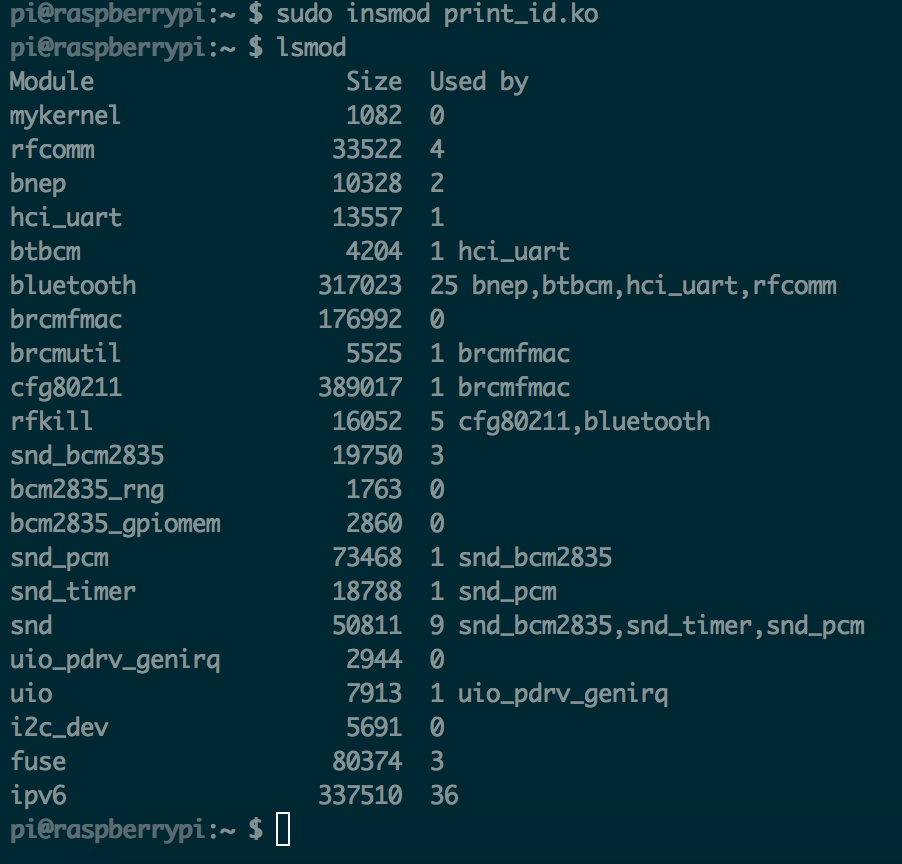
然后查看输出log:
dmesg内容如下：输出了各种进程的数量。
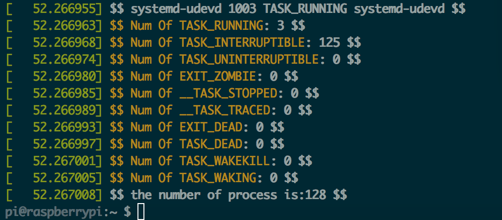
最后卸载mykernel模块：
sudo rmmod mykernel